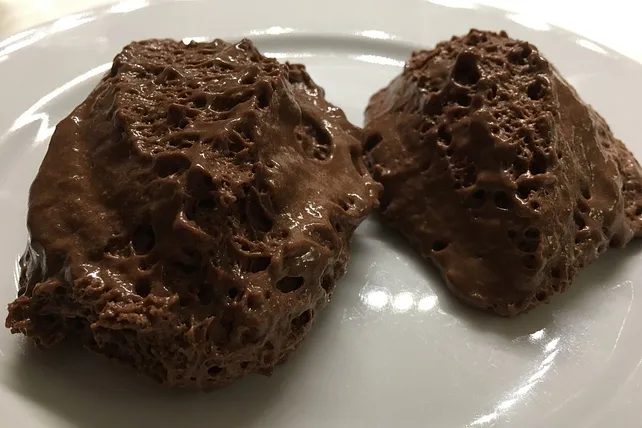

Vegan mousse au chocolat

Description
So delicious and chocolatery! What a treat!
Ingredients
- 450 g Schokolade, 60-80 % Kakaoanteil, vegan
- 500 ml Sojasahne (Sojacreme Cuisine), gekühlt
- 5 EL Zucker
- 5 EL Wasser
- 1 Banane(n), reif
- 2 Pck. Sahnesteif
Steps
- Die Banane bindet und dient als Eiersatz. Ich habe die Mousse au chocolat schon mehrmals zubereitet und immer weiter verfeinert. Die Mengenangaben können variieren, je nach der gewählten Schokolade, des Reifegrades der Banane etc.
- Im Wasserbad oder einem kleinen Topf die Schokolade zerbröckeln und mit dem Wasser auf kleiner Flamme unter ständigem Rühren langsam schmelzen. Bleibt sie zu fest, gibt man noch etwas Wasser hinzu. Banane mit einer Gabel zerdrücken, mit der Schokolade vermischen.
Schlagsahne, Sahnesteif und Zucker vermischen und steif schlagen und unter die Schokolade heben. Je nach Geschmack fügt man noch mehr Zucker hinzu oder lässt ihn ganz weg.
- Die Masse in ein Gefäß füllen und 2-3 Stunden kühl stellen.